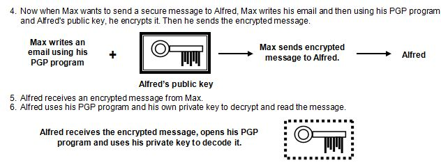

<div id="jsn-maincontent" class="span9 order1  row-fluid">
					<div id="jsn-maincontent_inner">
						<div id="jsn-centercol"><div id="jsn-centercol_inner">
									<div id="jsn-mainbody-content" class=" jsn-hasmainbody">
								<div id="jsn-mainbody-content-inner1"><div id="jsn-mainbody-content-inner2"><div id="jsn-mainbody-content-inner3"><div id="jsn-mainbody-content-inner4" class="row-fluid">
								
										
								
								<div id="jsn-mainbody-content-inner" class="span12 order1 ">
		
										<div id="jsn-mainbody">
										<div id="system-message-container">
	</div>

										<div class="item-page" itemscope itemtype="https://schema.org/Article">
	<meta itemprop="inLanguage" content="en-GB" >
	
		
						
		
	
	
		
								<div itemprop="articleBody">
		<p></p>
<h1 style="text-align: center;">Security, privacy and integrity of data, including back-ups, generations and transaction files</h1>
<p><strong class="NormalContentHeading">Security, privacy and integity of data</strong><br>With so much data now held in digital form, it is possible to copy and distribute it via the Internet within seconds to anywhere in the world. This has serious implications. Nobody, for example, wants their medical records or financial dealings to be freely available to anyone. <span style="line-height: 16.3636360168457px;">We all expect our details to be kept private by organisations that hold our details and to take effective and proactive steps to ensure they do.&nbsp;</span>Organisations have both a moral duty but also a legal obligation to keep our details safe. The Data Protection Act 1998 in the UK and various pieces of legislation in Europe and in other individual countries tries to ensure this. We also expect organisations to ensure that the data they do keep about us is up-to-date and accurate so that when it is used, it leads to decisions being made based on good data, not out-of date data.</p>
 
<p><strong>Security of data</strong><br>This term relates to protecting data from unauthorised users. It is concerned with the steps that are taken to ensure that only those people with the need and right to view data can actually do so. It covers protecting access to data, picking up accidental or malicious changes to data that compromises data integrity and also the steps taken to protect the systems that data is held on.</p>
<p><strong>Privacy of data</strong><br>This term relates to our expectation that our data belongs to us and nobody else. We can give permission for our data to be used by somebody else, and we should be made aware that if an organisation is collecting data about us, we know in advance what they will do with it but ultimately, we own our own data and expect it to be protected from viewing by unauthorised viewers. We expect organisations to have systems in place that reduce the chance of unauthorised access to our private data.</p>
<p><strong>Integrity of data</strong><br>This term relates to our expectation that organisations that keep data about us take proactive steps to ensure that the data is accurate and up-to-date. When data is collected and processed, we expect that data to be correct. Organisations should have procedures to ensure that any accidental or malicious changes to data are detected and corrected in a timely fashion.&nbsp;</p>
<p><strong>Secuirty measures to protect systems and data</strong><br>An organisation can take a number of practical steps to keep information private and confidential:</p>
<ol>
<li style="list-style-type: none;"><ol>
<li>It can ensure that a named person is responsible for ensuring that the organisation's DPA policy is enforced efficiently. This would ensure that employees are very clear about their responsibilities.</li>
<li>The Data Protection Act should be followed to the letter. This means, for example, that data should be deleted when it isn't needed anymore and shouldn't be sent to countries that don’t have legislation comparable to the DPA 1998.</li>
<li>The organisation should ensure that access to the hardware that holds the data is restricted. This could be done by ensuring the hardware is in locked, secure rooms that can only be accessed by authorised users.</li>
<li>The organisation could ensure that data files are password-protected, to ensure that unauthorised people who gain access to the files can't open them.</li>
<li>Data could be encrypted using a software encryption tool such as PGP (Pretty Good Privacy). This means that even if the data is accessed or intercepted whilst being emailed, it can't actually be read.</li>
<li>The organisation can ensure that the back-up policy in the organisation is being followed and that the back-up copies of data are themselves held securely and in encrypted form.</li>
<li>Regualar checks on computers for spyware, for example, should take place.</li>
</ol></li>
</ol>
<p class="NormalContent"><strong class="NormalContentHeading"> Maintaining the privacy of data</strong><br> The Data Protection Act 1998 requires that an organisation take steps to keep data secure. Any computer system that is accessible to people, either physically or over a network, has a problem - how does it make sure that only those people who should have access to data or resources on a network can do so and everyone else is excluded? How can it ensure that it keeps data secure? There are a number of ways to do this:</p>
<ul style="list-style-type: disc;">
<li style="list-style-type: none;">
<ul style="list-style-type: disc;">
<li>Logins and passwords</li>
<li>Firewalls, proxy servers and authorisation.</li>
<li>Firewalls and authorising a user from outside a LAN.</li>
<li>Encryption techniques.</li>
<li>Authentication techniques using digital signatures and digital certificates.</li>
</ul>
</li>
</ul>
<p><strong style="line-height: 1.5;">Logins and passwords and 'views of data'<br></strong>Computer systems which hold data should not be accessed by just anyone. Only an authorised user should be able to log on to the system. This means that they should have their own login and password. In addition, just because somebody can log in to a computer system, doesn't mean they should be able to access all of the data on it. When somebody sets up a new login and password for a new employee, they also have to set up what folders and files that person can view and what they can do with them, what rights they have e.g. to view a file, delete a file, amend a file and so on. This is known as the 'view of data' somebody has. Although everyone in organisation can access the same computer system with all of the data, each employee sees their own personal view of that data, depending on what job role they perform and what data they need to carry out that job. They cannot see any data that has nothing to do with their job role. Teachers, for example, can get access to a student's academic records and details about how to contact home, but they have no access to any medical records that the school may have about you on its system. On the other hand, the school nurse will be able to access your medical records but not your academic ones. The Head may be able to access all data.&nbsp;</p>
<p><strong class="NormalContentHeading">Firewalls, proxy servers and authorisation</strong><br> A Firewall, according to the British Computing Society's 'A Glossary of Computing Terms', "is a computing program used in a large computing system to prevent external users (even if authorised) getting access to the rest of the system. Network users' access is restricted to a small part of the system and the firewall software prevents a user (including unauthorised users) accessing data or executing any programs in the rest of the system". When a user on a network wants to access data or applications held in a main server, it sends a request for the information. The request is intercepted by the firewall program sitting in a proxy server. A proxy server is simply a server that has been set up to control access to the main server. The firewall program will look at the request and the information about the user that is automatically attached to it. It then checks both that the user is valid and that they have the right to the information they are requesting. It is able to do this because it holds a database of all the users and their associated rights - it just needs to look up its database! If the request is valid, then the firewall will send a message to a proxy server to retrieve the requested data. The proxy server will then access the data from the main server and pass it out through the firewall to the user. The user cannot access the main server directly but must go through the firewall and proxy server.</p>
<p><strong class="NormalContentHeading">Firewalls and authorising a user from outside a LAN</strong><br> Many computer networks are set up so that users can dial into them to retrieve files and use their resources. To prevent only authorised users dialling into the network, a firewall program on a proxy server can be used. A user dials in to the network with a user ID and password. The firewall looks at these and also looks at the other information automatically attached to the request, such as the individual's IP address. Using all of this information, it attempts to authorise the user. If the user can be validated, then access is granted. The user, however, will continue to work through this firewall and proxy server and will not have direct access to the network itself.</p>
<p><strong class="NormalContentHeading">Encryption</strong><br> As a last line of defence, sensitive data should be encrypted. Encryption is a technique that takes data and scrambles it so that it doesn't make any sense until you decrypt the message. Users may want to encrypt data for various reasons. For example, data may be encrypted as part of a company's procedures to comply with the Data Protection Act (to keep data secure). It may be that sensitive emails are being sent, for example holding medical, financial, national security or legal information. Remember, emails are sent across the Internet using packet switching. There are programs that hackers can use to 'grab' packets on a network. Since email is simple text, it would be easy to read a packet. It is also possible that you could send information to the wrong address or that messages end up in the wrong place by accident.</p>
<p><strong class="NormalContentHeading">Encryption using PGP</strong><br> Pretty Good Privacy, or PGP, is a very secure method of encrypting data. It takes a message and applies some complex maths to it to scramble the data. PGP is freeware so you can download a copy of PGP from http://www.tucows.com/ and try it out. There are lots of people interested in PGP - if you do a search for it on the Internet, you will find a lot of information about PGP.<br> How does a pupil called Max use PGP to send secure messages to his friend Alfred?</p>
<p align="center"></p>
<p align="center"></p>
<p style="text-align: left;" align="center"><span style="line-height: 1.3em;">If Alfred wants to return a secure message, he must ask Max to send him his Public Key first.</span></p>
<p><strong class="NormalContentHeading">Authentication and digital signatures</strong><br> When someone sends you an email, how can you be sure that it comes from whom you think it comes from? You can achieve this by using <strong>digital signatures</strong>. PGP can be used to sign an email digitally, with a special signature. It works like this.</p>
<ul>
<li style="list-style-type: none;">
<ul style="list-style-type: disc;">
<li>Alfred writes an email to Max.</li>
<li>He digitally signs it. By that, we mean that the PGP program takes the message and Alfred’s Private Key and then generates a signature (a mixture of characters from the keyboard). The signature is attached to the email.</li>
<li>Alfred then sends it.</li>
<li>When Max receives it, he opens his PGP program and uses Alfred's Public Key to check the signature. If there is any change in the message or Alfred's Private Key hasn't been used, then Max will be told by the computer that authentication has failed and he should consider that the message is not from Alfred or has been compromised.</li>
</ul>
</li>
</ul>
<p>Digitally signing emails is a very good way of letting your users check communications received. You do not want anyone pretending that they are you and your users need a way of being confident that an email is from who it says it's from. It can be used to help businesses as well because if a business sends you a communication that has been digitally signed, then there is no way they can say that they didn't send the communication in the future, perhaps when there is a disagreement about the details of a contract.</p>
<p><strong class="NormalContentHeading">Digital certificates</strong> <br> A digital certificate is another way of proving who you are when you do business on the Internet. Suppose somebody wants to buy something from an online shop. How do they <em>know</em> that the shop is a genuine shop? What is stopping a con artist from setting up a shop online, supposedly ‘selling’ bargains, collecting credit card numbers from unsuspecting buyers and then using them for illegal activities? What is to stop somebody setting themselves up as a virus-protection company and then getting you to download viruses? The answer is very little, which is where digital certificates come in. If a web site has been issued with a digital certificate it means that it is connected to a real person with a real address and a real phone number. Certificates are only issued by special companies after a series of stringent security checks. If someone goes to a web site to buy something and the web site has a genuine digital certificate, it increases the confidence of that buyer to do business with the web site. Remember that there are still a lot of people out there who are not happy using their credit cards online because of the very real problem of fraud. Digital certificates have been designed to help overcome that fear.</p>
<p>A Certification Authority issues the certificate. They will carry out a number of checks on a business before issuing a certificate to them. Once the web site owner has the certificate, they can display and use it on their web site. The certificate contains the name of the business, their Public Key and digital signature, a reference number, an expiry date for the signature and the digital signature of the Certification Authority. The digital signature of the Certification Authority is included so that someone can check that the actual certificate is a genuine one.</p>
<p><strong>Backing up data</strong><br>Have you ever lost work you have done on the computer? Do you backup your work onto a pen drive every time you do some work on the computer? If you don't, you should! Given the amount of coursework you probably have to do, it is a wise approach keeping up-to-date backup copies of work that goes towards your final course grades! Your teacher would have told you to do this many times and you will get little sympathy from anyone if you lose work! Companies must also back up their work. If you lose your work, you can start again - not much fun but possible. If a company loses files they could go out of business. People could lose livelihoods. Data is valuable to an organisation. It takes companies years to build up a customer base. Getting data into a computer takes time. Businesses today are run on computers.</p>
<p>Operating systems usually come with utility programs to allow you to take back-ups. Typical options include the ability to take an entire 'snapshot' of your hard drive (called a 'system image') so that if your hard drive fails, you simply replace it, and then run a recovery program on a pen drive or CD that loads the system image onto your new hard drive. Another option is to schedule back-ups so that back-ups happen automatically at a particular time of day. You can also tell your computer to do a full back-up (all of your data files), only back-up files that have been added or altered since the last time you did a back-up (called an 'incremental back-up') or only back-up files from certain folders. Most people used to back-up to an external hard drive but it is becoming more common to back-up to cloud storage now.</p>
<p>The last point about back-ups to make is that an untested back-up should not be depended upon. You should periodically test files being backed up to see if the process has been working correctly. Unfortunately, some people do not do this and find out that their system has not been backing things up correctly only when their hard drive fails! This can be a disaster, of course.</p>
<p><strong class="NormalContentHeading">Current legislation</strong><br> As computers have become more widespread, so the need for legislation has grown. There now exists legislation that seeks to protect our health and safety while working with computers, to protect our privacy, to ensure that those who seek to carry out criminal acts using computer technology are punished and to ensure that intellectual rights to material are protected. One major problem with any country's legislation, however, is that it is difficult to enforce those laws if the 'crime' is carried out in another country. The Internet is a worldwide phenomenon that crosses the boundary of every country. What is illegal in one country may be perfectly legal in another country, or may simply be impossible to enforce. There are lots of good sources that deal with this issue on the Internet. Search Google using keywords like privacy, legislation, Data Protection Act, European privacy legislation, SPAM, junk mail, cookies and so on.</p>
<p><strong>Version control and generations of files</strong><br>Documents and programs will typically be written and re-written many times in an organisation. There needs to be a system to control the different versions of documents, so everyone knows which one is the latest one. When you have large teams, and when employees leave and start jobs and have to typically pick up projects in the middle of their life, it is especially important to know which documents are the latest ones. When programs are being developed, they should be backed-up regularly using a pre-defined version control numbering procedure each time a back-up occurs. In this way, should a team ever need to go back to an earlier version of a program, perhaps because some changes they have made didn't work out and it would be very complicated manually undoing all of the changes since the last back-up, then it should be reasonably easy to do.</p>
<p>When software is released to the public, it typically is released with a version number. For example, V1.0 might the first version of a new game. If there is a minor update is released, perhaps because a bug was discovered and corrected, then the version becomes V1.0, and after the next minor update, it becomes V1.2, and then V1.3 and so on. After a year or two, an update might occur, which cannot be considered minor. Perhaps the whole look and feel of the program has been altered, with extra functionality. When major updates occur, the first number changes, so in our example, the application would become V2.0 and then after the next minor update, V2.1 and so on.</p>
<p><strong>Transaction logs</strong><br>A transaction log is a sequential record of any actions and changes made to data in a file or database table. Each time the main file is accessed, processed, searched, added to, amended, records deleted and so on, a new entry is made in the transaction log, which is a completely different file to the actual data. The entries in the transaction log should contain enough information to allow any particular change to be undone, or 'rolled back'. They can be very useful in helping you recover a database that has become corrupted somehow or where an action was not successfully completed. For example, you might be in the middle of updating the prices of products in a file because the tax rate changed, but halfway through the update, the computer system crashed. When the system is restarted, a problem with the database is reported. The transaction log should be able to see that an update was started but not completed and then be able to roll back all the changes to get the database into the position it was in before the update was started.</p>
<p>Transaction logs can grow very quickly so they need to be set-up correctly and regularly maintained. That means that old transactions need to either be deleted or archived, thereby freeing up space on the storage device that holds the transaction log.</p>
<p></p>	</div>

	
							</div>

									</div>
				
							</div>
							
				        							
							
							</div></div></div></div></div>			
							
							
		        				</div></div> 
				</div></div>